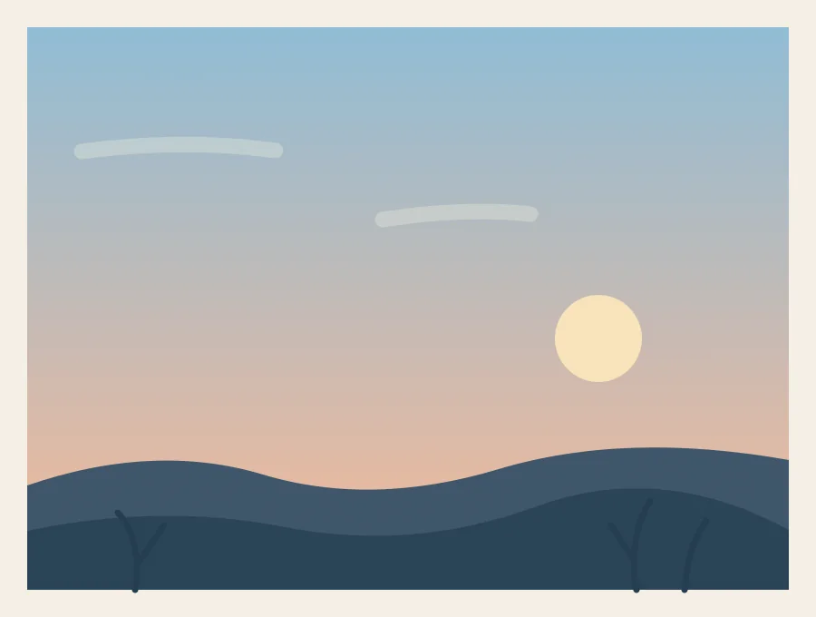
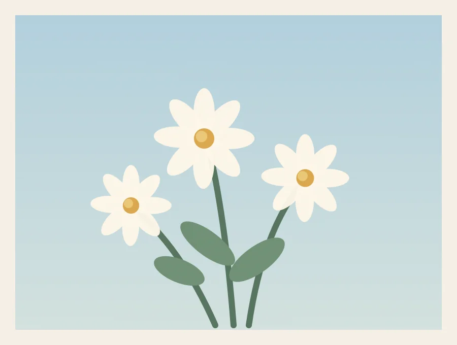
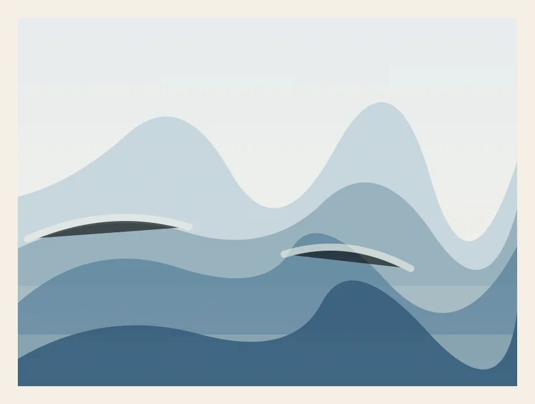
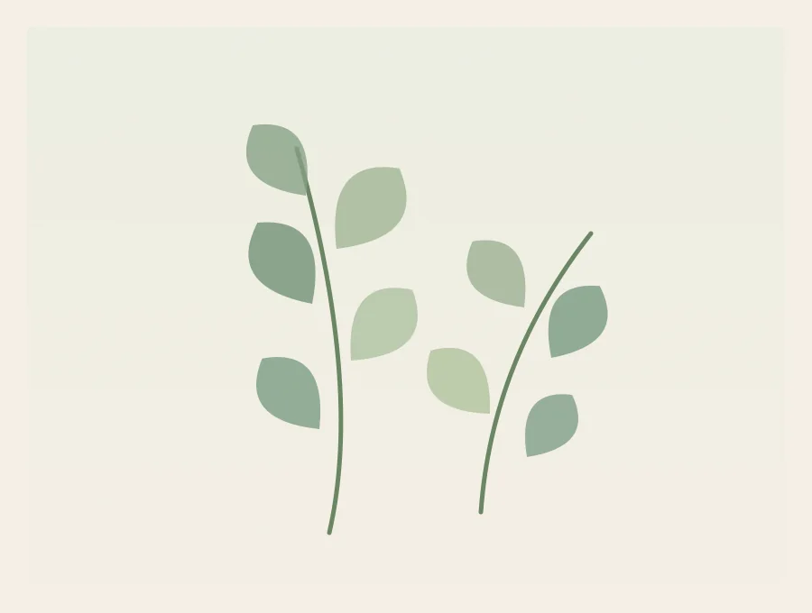

Featured project · 30 minutes
A small evening sky
A peach horizon, a soft blue sky, and just a few simple brushstrokes. This is a lovely place to practice blending.
Follow the tutorialA small space for making things
You don’t need a perfect sketch or a whole free afternoon. Pick a few colors, pull up a chair, and start with something small.
Let’s paint somethingBeginners are very welcome here.

A note from KylaPainting has helped me find a little confidence again. This corner is a place to share that joy—and to make starting feel a little easier.
Start here
Featured project · 30 minutes
A peach horizon, a soft blue sky, and just a few simple brushstrokes. This is a lovely place to practice blending.
Follow the tutorialA few things to try

Acrylic · 35 minutes
Practice simple petal strokes with a loose handful of white daisies and leafy stems.

Watercolor · 30 minutes
Explore light washes and layered hills, leaving a little white paper between them.

Watercolor · 20 minutes
Learn a press-and-lift brushstroke through a small botanical study in soft greens.
Practice a stroke on scrap paper. Change the colors. Leave a few edges unfinished. The point is to spend a little time creating.
Choose a lesson